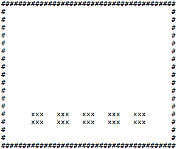
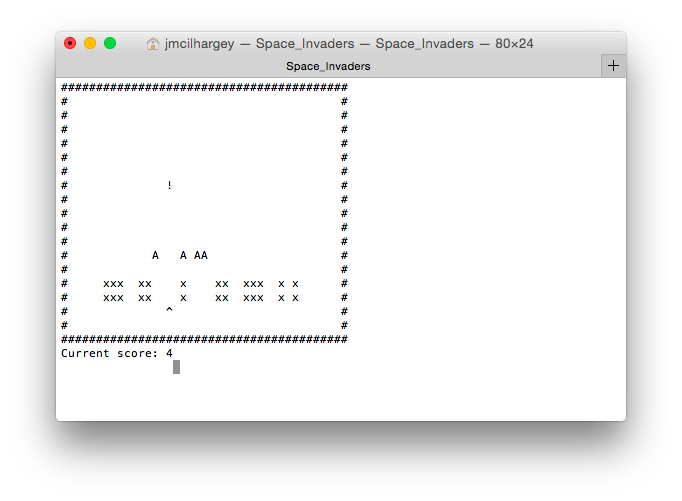

As a kid, I spent many afternoons and pocketfuls of quarters at the local arcade, competing with friends and chasing high scores. Today, world records are still set and broken for classic games like Donkey Kong, Pac-Man, and Space Invaders. Recently, a new challenger entered the competition.
Last year, Google exposed their neural network DeepMind to a number of classic games including Space Invaders. Without instructions, the software soon mastered (some of) the games and outmatched the best human opponents.
In this tutorial, we’ll build a basic, functional version of Space Invaders using C++. Since we’re using C++, we won’t have a native graphical user interface (GUI) so we’ll use standard ASCII characters to depict the game and update the screen.
If you’re not familiar with the Space Invaders gameplay, you can check out videos on YouTube to see it in action. With a good understanding of the game mechanics, we can reverse-engineer the game from scratch.
Let’s start by mapping out the essential features of the game and then walk through the process of coding the objects (game pieces) and methods (game actions) step-by-step. It’s important to scope out the elements of the game so we understand what we’re building.
- Map - A predefined area with x and y coordinates where all game action takes place.
- Defense bunkers - Protect the player from alien hit. Destroyed if struck by a bullet.
- Player - A ship at the bottom of the screen that can move horizontally.
- Aliens - A set number of aliens that move horizontally and move down one row each time they hit a border. With each defeated alien, the group speeds up.
- Shot - Fired by the player. Can hit destroy the alien with a hit. One shot at a time allowed.
- Win/lose/exit condition - If we defeat the aliens, we win. If the aliens reach the bottom, we lose. We can also leave the game.
Let’s make a basic map where the game takes place. Since we’re working in the console, that means we’ll display the 2-dimensional game area on the screen. One way to accomplish this is with an array or vector of strings. The string length represents the x dimension, while the number of strings represents the y dimension. Vectors are a good choice since we don’t need to define their size up front and vectors carry additional methods that make them easier to modify.
To create the map, we can either generate the strings in the program or store them in an outside file. Here we create a text file although you could just as easily compute the game map in a function. A cool modification might be to create a base map and then implement a random generator to place aliens and obstacles on the map.

With a plain text map.txt above, we can now create a file stream object to read the file line-by-line into a vector of strings.
#include <fstream>
#include <string>
#include <vector>
vector<string> loadMap(string myMap){
fstream file;
string line;
vector<string> mapFile;
file.open(myMap, ios::in);
if (file) {
while (getline(file, line)) {
mapFile.push_back(line);
}
} else {
cout << "Map not found." << endl;
}
file.close();
return mapFile;
}Our static map tempate is now loaded into memory when our program runs, but we’ve yet to display the results on the screen. Let’s create a simple function to output our vector of strings to the screen.
#include <iostream>
void updateScreen(vector<string> &myMap) {
for (string line : myMap) {
cout << line << endl;
}
}Player
Boom! Our basic map is complete and we can run our program to see the map displays in the shell output. But how can we update our map? Right now we’re looking at a static screen without aliens and a player ship flying around.
Since the map represents the game’s state, we know we’ll need to update the vector of strings with our game objects. What if we could insert a player ship on the map at some position x and y?
We know the ship has a couple of properties: It’s got a coordinate in x and y that can change; it’s represented by a character; and it can move from left to right along x. A class or structure data type is helpful here to contain these properties. We’ll use a structure here since this is a lightweight implementation without the need for private members.
struct shipObj {
const char shipCh = '^';
int x;
int y;
void takeStep(vector <string> &myMap, bool rightDir);
shipObj() {
x = 16;
y = 3;
}
};Our ship has coordinates and we even added a constructor function to initialize coordinates. With the constructor, we place our ship’s location near the map’s bottom corner to start. There’s also a definition for a takeStep method we’ll build next. This method will have to update our map, so we pass in the vector of strings by reference and also a boolean indicating whether our ship is moving to the right. This will be important when we listen for key events later on.
If we want the ship to move right, then the rightDir is true. For the ship to move right, the space at x + 1 must be empty, so it can’t be a ‘#’ character that defines our map border. If it’s a valid move, then we can update the character at that position with our ship ‘^’ and then erase the location where the ship was before by setting that character to a space ‘ ‘.
void shipObj::takeStep(vector <string> &myMap, bool rightDir) {
char nextStep = myMap.at(x).at(y - 1 + 2 * rightDir);
switch (nextStep) {
case ' ':
myMap.at(x).at(y) = ' ';
y += 2 * rightDir - 1;
myMap.at(x).at(y) = shipCh;
break;
};
}There’s a little trick here where we write (2 * rightDir) to get the character to the left or right. Since rightDir is a boolean, the expression is mathematically equivalent either 1 (true) or 0 (false).
Let’s check out our ship in action! So if we start up our program we’ll see the ship’s initial position. Okay cool, but nothing is moving. Ah, we’re missing a couple of pieces. We can’t trigger our takeStep function to move the ship and we don’t have a way to update the screen with the changes to our map.
For the program to take input, a function is used to listen for keypress events. I’m on a Mac with Terminal, so we’re using Carbon.framework with the Quartz event CGEventSourceKeyState. This is different on a PC with Command Prompt, where instead we can implement the GetAsyncKeyState function directly.
For the program to refresh, we’ll first initiate the game loop using a do-while loop that will keep going until some condition is met. If statements corresponding will listen for left and right arrow key input to call takeStep and the esc key will exit the game.
We can set rate of execution inside our do-while loop using the sleep_for function to block the current thread for a period of time. Each time the do-while loop is run, we call the updateScreen method to show our map.
Finally, with each iteration, we place the cursor position back to 0, 0 in the console so that map output will overwrite itself with each iteration. By re-printing the map in place every 100 ms, we’re mimicking movement at a frame rate of 10 per second.
#include <thread>
#include <chrono>
#include <Carbon/Carbon.h>
#include <ncurses.h>
void gotoxy(int x, int y) {
printf("%c[%d;%df",0x1B,y,x);
}
int main() {
int speed = 100;
bool game_running = true;
vector<string> gameMap;
shipObj player;
// Using ncurses, clear the screen and refresh
initscr();
refresh();
do {
// Reset the cursor position
gotoxy(0, 0);
// Block the thread to simulate a frame rate
this_thread::sleep_for(chrono::milliseconds(speed));
updateScreen(gameMap);
gameMap.at(player.x).at(player.y) = player.shipCh;
if (CGEventSourceKeyState(kCGEventSourceStateCombinedSessionState,
kVK_LeftArrow)) {
player.takeStep(gameMap, false);
}
if (CGEventSourceKeyState(kCGEventSourceStateCombinedSessionState,
kVK_RightArrow)) {
player.takeStep(gameMap, true);
}
if (CGEventSourceKeyState(kCGEventSourceStateCombinedSessionState,
kVK_Escape)){
game_running = false;
}
} while (game_running);
return 0;
}Our next task is to add our foe, the alien invaders. We can follow the same pattern as with the ship where we use a struct to store the alien properties and methods. Aliens can get vaporized by our player, so we’ll add a property and method for that.
const int INIT_INVADERS = 8;
struct invObj {
const char alien = 'A';
bool alive = true;
int x;
int y;
bool moveRight = true;
invObj(int xVal, int yVal) {
x = xVal;
y = yVal;
}
void kill() {
alive = false;
}
};Going back to the game mechanics, the aliens move right until they hit a border and then to down and move left until they hit a border and so on. Just like the player, we can check to see what the character is to the right or left of the invaders. If it’s a space, we move over. If it’s a border ‘#’, then we move down a row and reverse directions.
void moveInvaders(vector<string> &myMap, vector<invObj> &invaders) {
char nextStep = myMap.at(invaders.at((invaders.size() - 1) *
invaders.at(0).moveRight).x).at(invaders.at((invaders.size() - 1) *
invaders.at(0).moveRight).y + 2 * invaders.at(0).moveRight - 1);
switch (nextStep) {
case '#' :
for (invObj &invader : invaders) {
invader.moveRight = !invader.moveRight;
myMap.at(invader.x).at(invader.y) = ' ';
invader.x++;
}
break;
default :
for (invObj &invader : invaders) {
invader.y = invader.y + 2 * (invader.moveRight) - 1;
}
myMap.at(invaders.at((invaders.size() - 1) *
!invaders.at(0).moveRight).x).at(invaders.at((invaders.size() - 1) *
!invaders.at(0).moveRight).y - 2 * invaders.at(0).moveRight + 1) = ' ';
break;
};
for (invObj &invader : invaders) {
if (invader.alive) {
myMap.at(invader.x).at(invader.y) = invader.alien;
} else {
myMap.at(invader.x).at(invader.y) = ' ';
}
}
}Now when the game starts, we’ll have to create our alien objects so let’s move that and loading the map into an init function so we can keep our main program compact.
void init(vector <string> &gameMap, vector<invObj> &invaders){
string mapName;
for (int i = 0; i < INIT_INVADERS; i++) {
invObj invader(1, i + 1);
invaders.push_back(invader);
}
cout << "Enter file path to the map: ";
getline(cin, mapPath);
gameMap = loadMap(mapPath);
}
int main() {
int speed = 100;
bool game_running = true;
vector<string> gameMap;
vector<invObj> invaders;
shipObj player;
init(gameMap, invaders);
...
...
return 0;
}Looking back at our list, it looks like we’re almost done! The last item for us to build is the player shot. We can think of this just like the other objects except that it travels vertically in the y direction from the location of the player’s ship until it hits something, either a border ‘#’, a bunker ‘x’, or an alien ‘A’.
struct shotObj {
const char shotCh = '!';
int x;
int y;
bool currShot = false;
void takeShot(vector <string> &myMap, const shipObj &player, vector<invObj> &invaders, int &score, bool fire);
};For the takeShot method, we’ll add extra actions if we hit an invader ‘A’ where we increment a score variable and call the invader’s kill method to remove it from the map.
void shotObj::takeShot(vector <string> &myMap, const shipObj &player, vector<invObj> &invaders, int &score, bool fire) {
if (fire && !currShot) {
currShot = true;
x = player.x - 1;
y = player.y;
}
if (currShot) {
char nextStep = myMap.at(x - 1).at(y);
myMap.at(x).at(y) = ' ';
switch (nextStep) {
case ' ':
x--;
myMap.at(x).at(y) = shotCh;
break;
case '#':
currShot = false;
break;
case 'x':
myMap.at(x - 1).at(y) = ' ';
currShot = false;
break;
case 'A':
for (invObj &invader : invaders) {
if (invader.y == y) {
invader.kill();
}
}
score++;
currShot = false;
break;
}
}
}There can only be 1 shot at a time, so if currShot is false then we set the starting position to the ship’s location. If a shot is already fired, then we calculate it’s next position and run that character through the switch statement.
As a last step, the spacebar is added as a condition to call the takeShot method. The up and down arrow also allow us to module the game speed. The score is displayed and the exit condition updated if all the invaders are killed.
int main() {
int speed = 100;
int score = 0;
bool game_running = true;
vector<string> gameMap;
vector<invObj> invaders;
shipObj player;
shotObj shot;
init(gameMap, invaders);
initscr();
refresh();
do {
gotoxy(0, 0);
this_thread::sleep_for(chrono::milliseconds(speed));
moveInvaders(gameMap, invaders);
shot.takeShot(gameMap, player, invaders, score, false);
updateScreen(gameMap);
gameMap.at(pac.x).at(pac.y) = pac.pacCh;
if (CGEventSourceKeyState(kCGEventSourceStateCombinedSessionState,
kVK_LeftArrow)) {
player.takeStep(gameMap, false);
}
if (CGEventSourceKeyState(kCGEventSourceStateCombinedSessionState,
kVK_RightArrow)) {
player.takeStep(gameMap, true);
}
if (CGEventSourceKeyState(kCGEventSourceStateCombinedSessionState,
kVK_Space)) {
shot.takeShot(gameMap, player, invaders, score, true);
}
if (CGEventSourceKeyState(kCGEventSourceStateCombinedSessionState,
kVK_DownArrow)) {
speed += 10;
}
if (CGEventSourceKeyState(kCGEventSourceStateCombinedSessionState,
kVK_UpArrow)) {
speed -= 10;
}
if (CGEventSourceKeyState(kCGEventSourceStateCombinedSessionState,
kVK_Escape)){
game_running = false;
}
cout << "Current score: " << score << endl;
} while (game_running && score != INIT_INVADERS);
if (score == INIT_INVADERS) {
cout << "\n\nYOU WIN!";
}
}
Congrats, we’ve built a complete and functional version of Space Invaders! We kept our code modular and efficient so it’s easy to update and enhance. With a bit more work, we could improve the game by adding levels and score keeping. You can check out the completed code on GitHub.